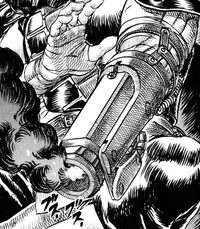

About Guts
Guts is a fictional character set in the world of Berserk- a legendary manga written by Kentaro Miura. In Berserk, Guts is a warrior who battles against both demonic entities and the darkness that's within himself. His main goal is to restore the sanity of his lover, Casca, who had developed mental issues after experiencing a horrifying run-in with the demonic "Apostles".
Guts' Characteristics
Guts' most notable feature is his enormous sword, often referred to as a "massive hunk of iron". In addition to his massive sword, Guts himself is huge, standing at 6'8" and weighing in at over 250 Lbs. He has a weathered complexion, clearly showing the damage of countless battles, and is mising his right eye and left arm. His jet black armor has earned him the title of "the Black Swordsman". In lieu of his missing arm, he acquired a metal prosthetic containing a small cannon.
Pictured above is Guts' arm cannon after being fired
Guts' Companions
- Puck, a friendly elf, who provides comic relief, and can heal wounds using his elven powers
- Casca, his lover who went insane after a run-in with demonkind
- Schierke, a young witch apprentice who has taken a liking to Guts due to his strength of mind and character
- Farnese, an ex-member of the Holy See who ended up following Guts' band despite intially being enemies
- Serpico, Farnese's bodyguard of sorts, has great skill and has actually grown quite fond of Guts despite his inital disposition towards him Click here to visit the Berserk wiki